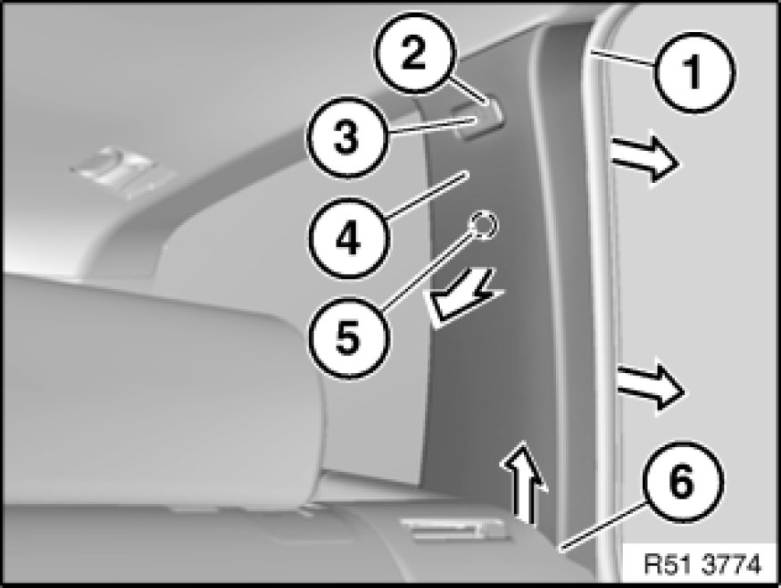
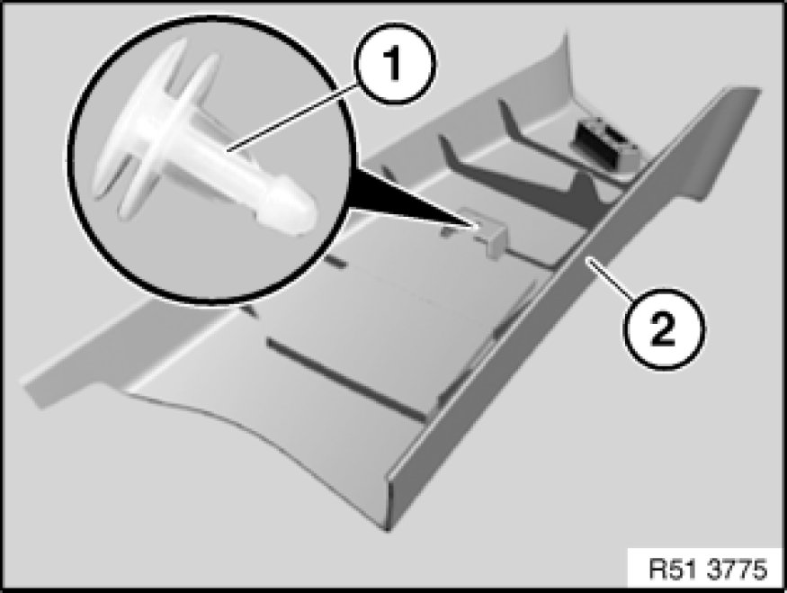

Removing and Installing/Replacing Trim Panel for Rear Left or Right Roof Pillar
51 43 251 - Removing and installing/replacing trim panel for rear left or right roof pillar (C-pillar)

Warning!
Follow safety instructions 51 00 ... Safety Instructions For Working on Cars With Airbag Systems for working on vehicles with airbag systems.
Important!
Do not use any sharp-edged tools to remove trim (risk of damage to head airbag).

Detach mucket (1) in area of trim panel for roof pillar (4).
Lever out trim (3) and remove.
Release screw (2), tightening torque 51 43 1AZ [1][2]Specifications.
Unclip trim panel for roof pillar (4) from mounting point (5) in direction of arrow.
Feed trim panel for roof pillar (4) upwards out of mounting (6) and remove.
Note:
Make sure trim panel for roof pillar (4) is correctly seated in mounting (6).

Installation Note:
If necessary, lever out clip (1) remaining in bore.
If necessary, replace faulty clip (1).
Feed in trim panel for roof pillar (2) preassembled with clip (1) first at bottom, then position on associated bore and clip into place.